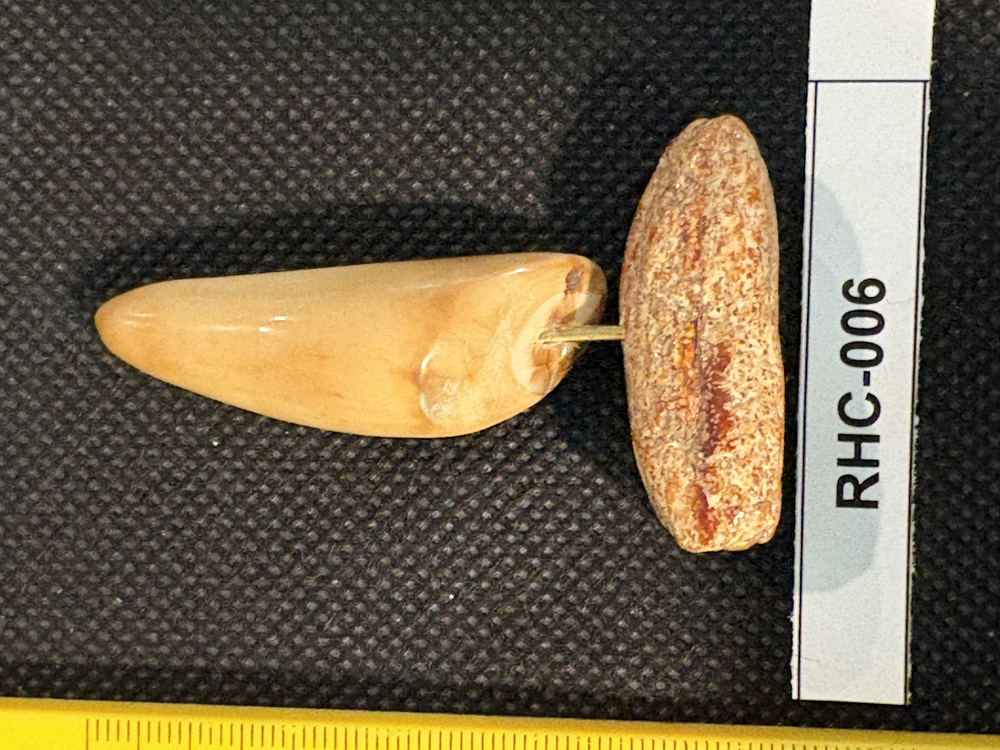

RHC-006 reviewed
Engraved Wolf Head Tooth on Rod-and-Base Display Mount

- Object Type
- Engraved tooth, displayed on a rod-and-base mount (same style as RHC-005) — a metal rod set into a small mottled disk base, with the tooth fixed atop the rod
- Material
- Tooth presumed sperm whale tooth (same reasoning as RHC-001 — conical curved form, smooth dense surface with age mottling); not physically examined. Base disk is a mottled reddish-brown and cream material, texture suggests either a polished stone (e.g. agate/jasper) or a cross-section of horn/bone — not confirmed, and notably different material from the plain wood disk base used on RHC-005's mount.
- Dimensions (cm)
- length: 6.0cm — Tooth length (~6.0cm) measured off the cm scale; width and base dimensions not separately measured — ruler only runs along one axis in these photos.
- Subject Matter
- A wolf's head portrait, shown looking/howling, rendered in grey-brown ink line work with cross-hatched shading for fur texture, with a pine tree silhouette behind.
- Inscriptions
- “possible small mark near lower right of the scene”
- “possible small mark near lower right of the scene”
- Artist Attribution
- unknown (possible faint mark, unreadable)
- Date / Period
- Undated; no clearly legible signature or date
- Mount / Display Stand
- Mounted for display on a rod-and-base stand, same style as RHC-005 — a metal rod set into a small disk base, tooth fixed atop the rod. Base disk material differs from RHC-005's (mottled reddish-brown vs. plain wood), so likely not a matched pair of stands, though both appear to be the same style of custom mount.
- Color / Technique
- Traditional grey-brown ink line scrimshaw engraving with cross-hatched shading
- Condition Notes
- Surface shows natural mottling/staining typical of aged tooth material; small glossy highlight near the wolf's ear area is a reflection, not damage. No visible cracks or losses. Not physically examined.
- Distinguishing Features
- Same rod-and-base display mount style as RHC-005 but with a visually distinct base disk material — worth watching for whether more items in this batch share this mount style, which could suggest a set RHC assembled and displayed together.
- Legal / Regulatory Status
- Tooth material presumed sperm whale (same flag as RHC-001) — undated, so pre/post-1972 MMPA status can't be determined from the piece itself. Flag for legal review before any loan/sale; not a legal determination.
- Rights / Copyright
- No legible signature identified; copyright status undetermined.
- Keywords
- wolf engraved tooth display mount rod and base stand scrimshaw
- Related Items
- RHC-005
- Status
- reviewed
- Date Cataloged
- 2026-07-15
Open Research Questions
Research finding (phase 3, 2026-07-15): No web research applicable to the faint signature — this needs raking-light/magnification physical inspection as originally noted; see RHC-005 for general rod-and-base mount context.